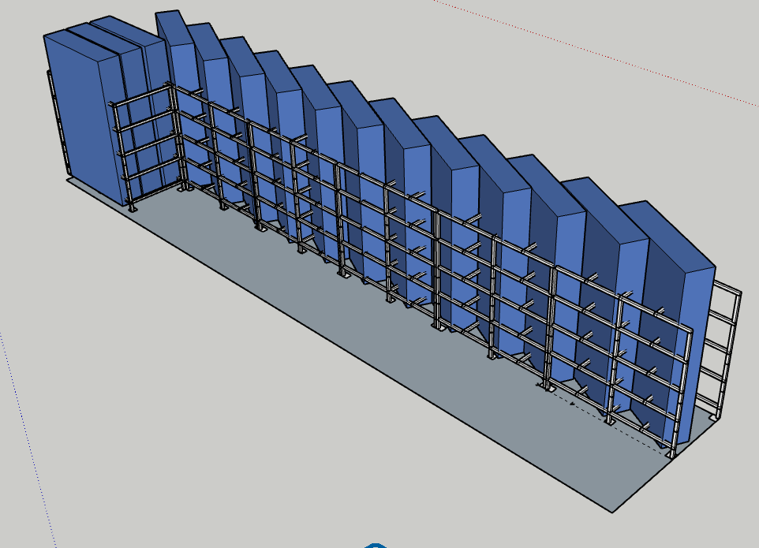
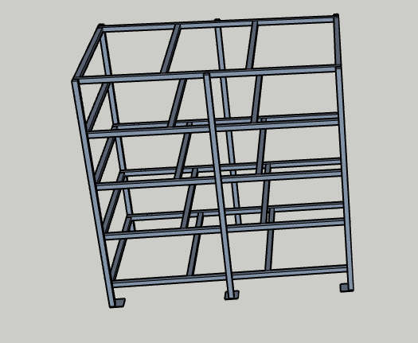

Engineering Intern · Aerodine Composites · Summer 2026
Angled Racking for a Prepreg Cold-Storage Freezer



The problem
Prepreg has to stay below freezing to keep the resin from advancing, so the shop's inventory lives in a walk-in freezer measuring 90 in deep by 418 in long. The freezer had no shelving, so boxes sat stacked on the floor. Only the top box was reachable, the bottom box carried the weight of everything above it, and most of the freezer's height went unused. With inventory growing, the problem was only going to get worse.
Constraints
- Aisle. Pallet carriers drive the full length of the freezer, which reserves 48 in and leaves 42 in of depth along the wall.
- Box size. The largest box in inventory is 60 × 14 × 14 in. Allowing for tube wall on both sides and enough clearance to slide a box in and out, each slot needed 64 in.
- Load. Roughly 100 lb per box, with little enough deflection that a loaded level does not bind the box above it.
- Environment. A freezer that is opened repeatedly cycles through the dew point, so the structure sees condensation and frost.
What I did
I measured the freezer interior and the inventory, then modeled the racking in SketchUp with the boxes included as solids, so the angle, slot length, and aisle could be checked together. At 49°, a 64 in slot takes up 64 cos 49° = 42.0 in of depth, which is the space left beside the aisle. I went through several configurations before settling on the layout. The single-bay study above is an early one; the version we built dropped the feet and added another set of ribs once the frame sat directly on the floor.
I specified 1.5 in square steel tube because it carried the load at these spans and welds cleanly. I built the unit with one other team member, welding the frame and shelf levels to the modeled dimensions. Several joints that looked fine in the model were hard to reach with the torch once the frame was tacked together, so we changed the weld order partway through.
Skills practiced
- Designing around a fixed space and a required pallet aisle
- Fit and clearance calculations
- SketchUp modeling with the boxes included to check fit
- Choosing structural tube for the load and freezer conditions
- MIG welding and fabrication with a partner